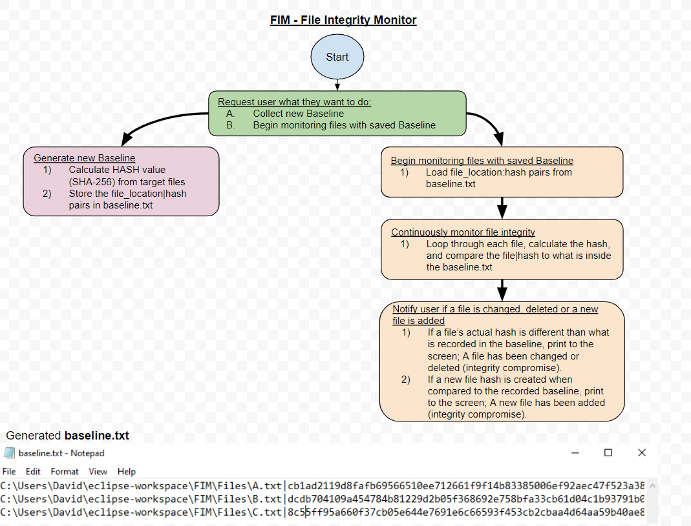

FIM - File Integrity Monitor
Posted on: 29/11/2021, 5:58 PM
To gain a better understanding of the meaning of integrity within the CIA triad, I built a FIM using Java.
By creating this application, it has allowed me to learn and strengthen my knowledge in the following:
a. Java
b. Hashing Algorithms (SHA-256)
c. Automation
Application Overview
The FIM first generates a baseline file consisted of each target file's hash value using the SHA-256 hash function.
Using the generated baseline, the FIM will continously ensures the consistency of data inside text files within a specified folder. Additionally, it will monitor if
any of the current files are deleted or if any new ones are added. If any of the above occur, an alert is raised to the user.
The flowchart belows describes the steps the FIM will take depending on the option the user selects:

Check out the source code to see how it works:
Github link